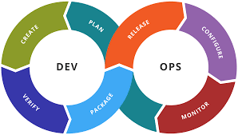
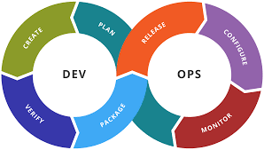

Accessibility in web design
Accessibility in web design ensures that websites are usable for everyone, including people with disabilities. It involves making content perceivable, operable, understandable, and robust. This approach not only promotes inclusion but also meets legal requirements and enhances the overall user experience. Key practices include using clear language, providing text descriptions for images, and testing with accessibility tools. Making sites accessible benefits all users.
Responsive Design
Responsive design ensures that websites function well on a variety of devices and screen sizes, from desktops to smartphones. It involves flexible layouts, images, and CSS media queries that adapt the design to different screens. This approach enhances user experience by providing a seamless interface, regardless of the device used. Key practices include using fluid grids, flexible images, and mobile-first design strategies. Responsive design is essential for reaching a wider audience and improving accessibility across devices..
Grids in Web Design
Grids are a fundamental layout structure in web design that help organize content systematically. They create a visual hierarchy and improve the overall readability of a website by aligning elements in rows and columns. Using grids allows for consistency and balance, making it easier to design responsive layouts that adapt to different screen sizes. Key practices include using CSS Grid or Flexbox for layout, defining clear spacing and alignment, and ensuring that elements are visually cohesive. Grids enhance user experience by providing a clean and organized interface.
Web Design
Web design involves the planning and creation of websites, focusing on aesthetics, layout, and user experience. It combines elements like color schemes, typography, and responsive design to ensure accessibility across devices, from desktops to mobile phones. A well-thought-out web design considers user navigation, making information easy to find and interact with. Effective web design enhances usability and engages visitors, fostering a connection between the brand and its audience. By incorporating best practices in seo.
Css FlexBox
CSS Flexbox is a layout model that allows for responsive and efficient arrangement of elements within a container. It enables developers to control alignment, direction, and spacing of items easily, adapting to different screen sizes. With Flexbox, creating complex layouts becomes straightforward, enhancing both design flexibility and user experience. It provides properties like `justify-content` and `align-items`, which help distribute space and align items within a flex container. Additionally, Flexbox allows for easy reordering .
Backend Development
Backend development refers to the server-side of web applications, focusing on databases, server logic, and application programming interfaces (APIs). It involves programming languages like Python, Java, or Node.js to handle data processing, storage, and communication with the frontend. A robust backend architecture is essential for managing user authentication, data retrieval, and real-time processing, ensuring that applications can scale effectively as user demand grows. It also emphasizes security measures to protect sensitive data and prevent unauthorized access


 
